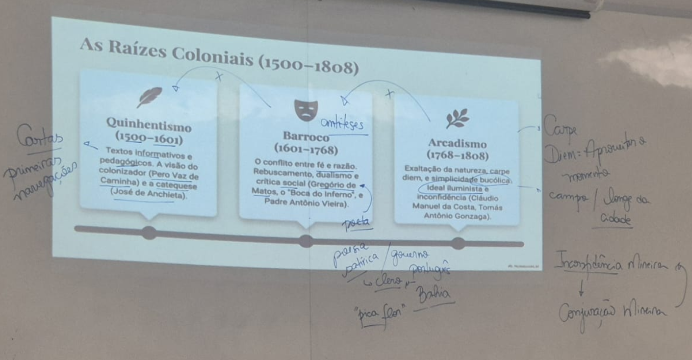
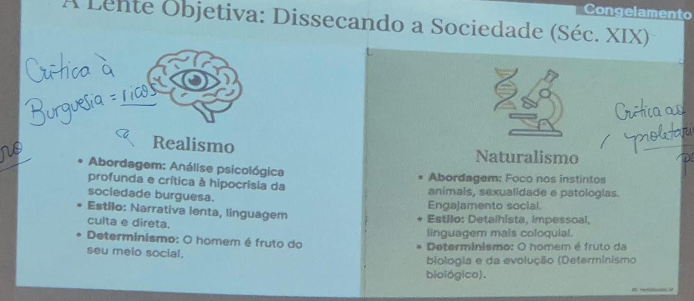
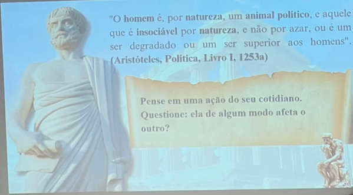
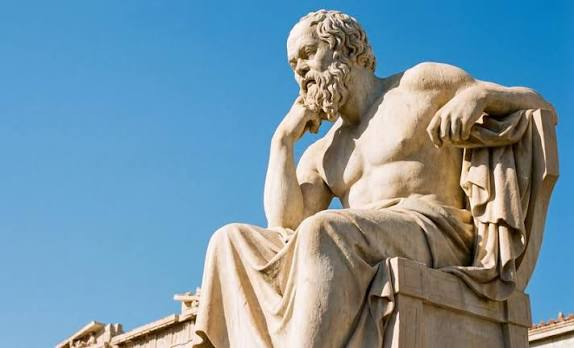

Áreas do Saber • Ciências Humanas
Ciências Humamas
Registros, anotações de aula e práticas desenvolvidas em História, Filosofia, Sociologia e Geografia ao longo do Ensino Médio.
História
Estudei os grandes conflitos do século XX, incluindo a Primeira e a Segunda Guerra Mundial, a Guerra Fria e a evolução das estratégias militares (como a 1ª, 2ª e 3ª gerações de guerra). No cenário brasileiro, analisei o período da Ditadura Militar no Brasil, seus impactos políticos e o processo de retorno à democracia.

Filosofia
Participei de discussões sobre o pensamento filosófico e como ele ajuda a questionar a realidade, debatendo temas como ética, moral, liberdade individual e convivência em sociedade. O objetivo foi desenvolver o senso crítico e conectar as ideias dos filósofos aos desafios atuais e às redações do ENEM.


Sociologia
Analisei a formação da cultura, da identidade e o papel dos movimentos sociais na conquista de direitos. Também estudei questões ligadas aos direitos humanos, ao exercício da cidadania e aos impactos sociais causados pelo período da Ditadura Militar no Brasil.
Geografia
Aprofundei os estudos sobre globalização, geopolítica mundial, formação de blocos econômicos e os impactos territoriais dos conflitos contemporâneos. O foco foi compreender como as relações de poder e a economia global transformam o espaço geográfico e a vida nas cidades.